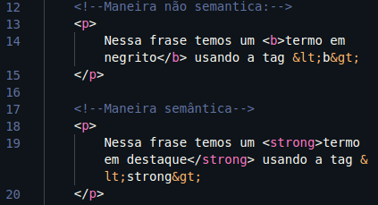
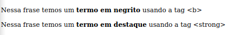
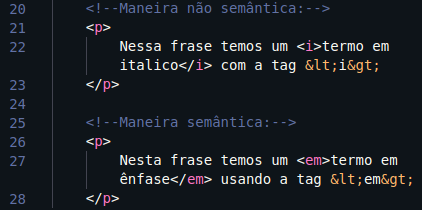
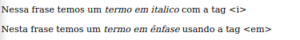

Existe duas maneiras de inserir o negrito em um texto:
Temos a maneira (Não semântica) e a maneira
( semântica ).
Ao especionar o elemento vera que ultilizei 2 tags para um
mesmo objetivo: A tag <b> e a tag <strong>.
Veja um outro exemplo:

Veja o resultado:

E visulmente não mudou nada, mas a qustão que fica é qual
a
diferença dos dois?
A tag <b> é apenas
FORMA, mas já a tag <strong> tem um sentido,
um
significa é uma maneira de DESTAQUE.
Agora vamos falar um pouco sobre o italico e a sua explicação
assemelha-se
bastante com a explicação anterior, veja
um exemplo:

Veja o resultado:

E pelo que podemos ver, não mudou nada (apenas as tags, óbvio).
Do mesmo jeito da explicação anterior, temos as duas maneiras:
Não semântica: Onde a tag <i> é apenas FORMA.
Semântica: Onde a tag <em> tem um sentido,
um significado. A ÊNFASE.
<mark> é uma tag para usar como marca texto, como padrão
ela é amarela, mas futuramente iremos poder mudar a cor, mas veja um exemplo:
"Esse texto está marcado".
<small> Deixa pequeno determinado texto selecionado,
veja um exemplo:
"Aqui está um texto pequeno".
<u> é uma tag para sublinhar determinado texto,
veja um exemplo:
"Aqui esta um texto sublinhado".
<del> essa tag risca determinado texto, veja um
exemplo:
"Aqui esta um texto riscado"
<sup> Essa tag irá sobrescrever um determinado
texto selecionado, veja o exemplo:
"x20+3"
<sub> vai sobrescrever um determinado texto selecionado,
veja o exemplo:
"H2O"